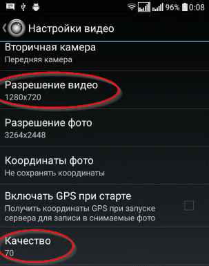
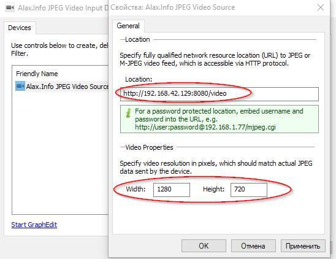
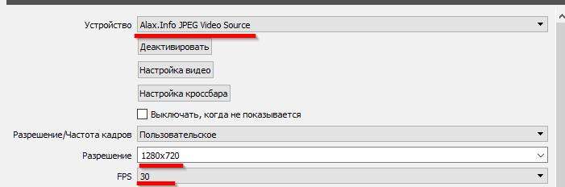

Долгое время я использовал Droidcam. Но в один прекрасный день оно меня окончательно заебало тем, что нормально работает только в разрешалове 640x480, а в 720p начинает тормозить картинка, да еще и хуеву тучу операций нужно сделать чтобы оно просто нормально заработало, и я решил поискать что-то что даст хотя-бы 720p. Нашел вот такое решение.
За основу взята вот эта статья. Сначала несколько моментов которые выплыли за несколько первых дней использования.
Телефон подключаем не через wifi, а через usb шнурок. Во-первых через wifi у меня были ужасные лаги, а то и пропадала связь вовсе. Не так много оно жрет канала, но видать
роутер просто через некоторое время начинал подахуевать.
И во-вторых сама апликуха жрет дохрена батареи, а вместе со штатной подсветкой (она же вспышка, какой никакой, а дополнительный свет)
так и вообще заряд уходит в минус даже если телефон заряжается все время по USB. Качаем эту апликуху. Первым делом делаем доступной нашу камеру по IP. У меня вот так:

Дальше идем в настройки приложения. 
Здесь выставляем наше желаемое разрешалово, в данном случае 720p (широкоформатное) и качество. Иногда ставлю также не широкоформатное, так как когда сычую за пекарней я хуево помещаюсь в кадр. Начинай от 50 и дальше, пока не начнет подтормаживать видео. У меня на 90+ уже начинает тормозить. Так что ставлю примерно 70-80 (если вещаю не в широкоформатном разрешении то и на 90 норм).
Чекаем все это пока просто в веб интерфейсе. Выставить разрешалово и качество, а также включить вспышку можно будет в принципе и потом в том же веб интерфейсе. Айпишник и порт к веб интерфейсу увидишь когда запустишь камеру (у меня это было что-то в духе 192.168.42.129:8080) Остальные настройки я особо и не смотрел. Думаю можно еще поиграться с теми что отключают экран или вообще сворачивают приложение, может будет не так люто садить батарею. Дальше качаешь эту приблуду. 
Вбиваем урл такого вида (c /video в конце) и выставляем наше разрешалово. Потом просто добавляем как камеру в OBS 
Фпс может быть и больше, но у меня ipcam выдает максимум 30. Из косяков единственное что было замечено это то, что иногда все настроено правильно, а картинка в OBS не появляется или просто висит. Помогало просто по новой добавить камеру в OBS.